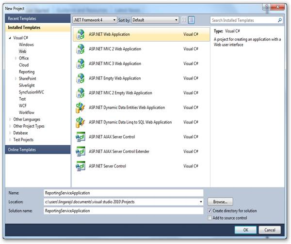
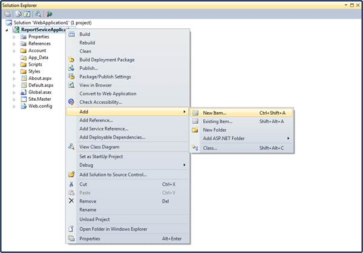
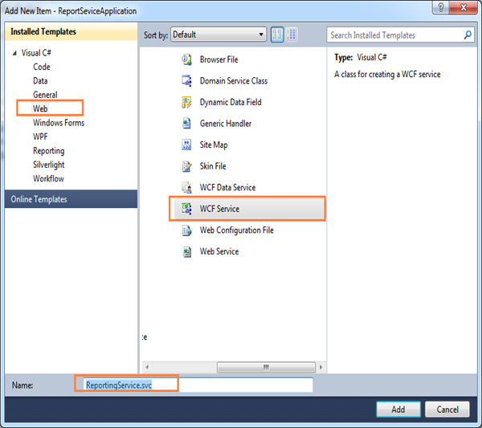
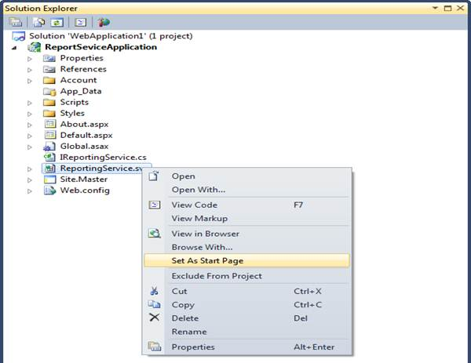
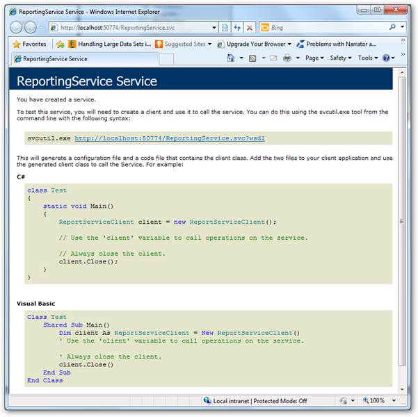
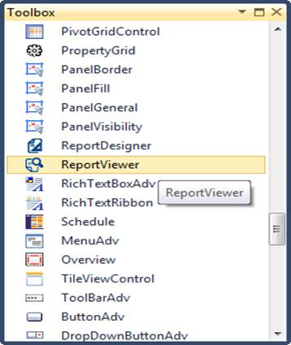
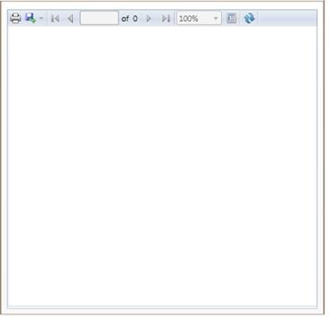
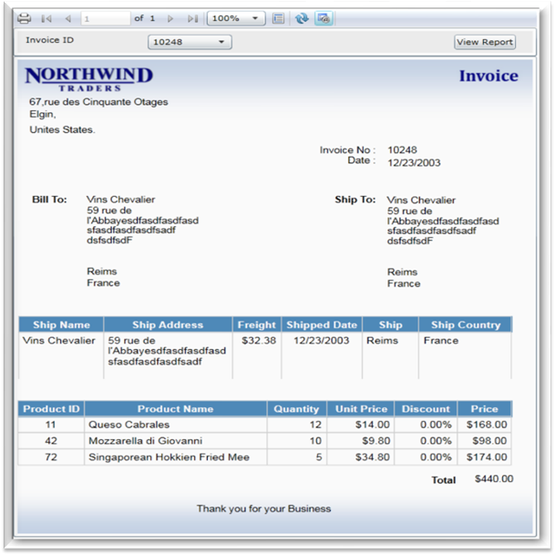
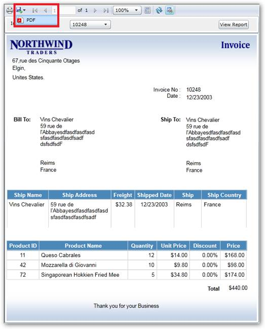

Users can create a simple sample through designer with Syncfusion SL ReportViewer Control using the following steps.
1. Create a new web application in VS2010.

Figure 7: Create Web Application
2. On the Solution Explorer, right-click References folder, and then click Add Reference.

Figure 8: Adding Refernces
 Note: The added references will appear under the
References folder.
Note: The added references will appear under the
References folder.

Figure 9: Added References
3. To add a new WCF service file in the web application, right-click on the newly added web application under Solution Explorer dialog.

Figure 10: Adding New Item
4. Click Add and select New Item. The Add New Item dialog will open.

Figure 11: Adding WCF Service file
5. Click Web under Visual C#.
6. Click WCF Service and click Add.
7. Update following changes in the auto generated WCF service file.
using System; using System.Collections.Generic; using System.Linq; using System.Runtime.Serialization; using System.ServiceModel; using System.Text; namespace ReportingServiceApplication { public class ReportingService : Syncfusion.Reports.Server.ReportService { }} |
Note: The added WCF Service file will appear under
the created web application.

Figure 12: Set as start page option in Solution Explorer
8. Right-click on the newly added WCF service file and select Set As Start Page.
9. Run the service application. The service information is displayed.

Figure 13: Created Reporting service
10. Create a new Silverlight application in VS2010.
11. Drag the ReportViewer control from Toolbox to the window.

Figure 14: Toolbox
Note: The Report Viewer window will be modified as
shown in below.

Figure 15: Report Viewer
Note: The following code is auto generated in XAML
window.
<UserControl x:Class="ReportViewerTestApplication.MainPage" xmlns="http://schemas.microsoft.com/winfx/2006/xaml/presentation" xmlns:x="http://schemas.microsoft.com/winfx/2006/xaml" xmlns:d="http://schemas.microsoft.com/expression/blend/2008" xmlns:mc="http://schemas.openxmlformats.org/markup-compatibility/2006" mc:Ignorable="d" d:DesignHeight="400" d:DesignWidth="400" xmlns:my="clr- namespace:Syncfusion.Windows.Reports.Viewer;assembly=Syncfusion.ReportViewer.Silverlight"> <Grid x:Name="LayoutRoot" Background="White"> <my:ReportViewer HorizontalAlignment="Left" Name="reportViewer1" /> </Grid> </UserControl>
|
12. To load a report in Report Viewer from server (Hosted service) machine, set the ReportPath, ReportServiceUrl and ProcessingMode.
<UserControl x:Class="ReportViewerTestApplication.MainPage" xmlns="http://schemas.microsoft.com/winfx/2006/xaml/presentation" xmlns:x="http://schemas.microsoft.com/winfx/2006/xaml" xmlns:d="http://schemas.microsoft.com/expression/blend/2008" xmlns:mc="http://schemas.openxmlformats.org/markup-compatibility/2006" mc:Ignorable="d" d:DesignHeight="400" d:DesignWidth="400" xmlns:my="clr- namespace:Syncfusion.Windows.Reports.Viewer;assembly=Syncfusion.ReportViewer.Silverlight"> <Grid x:Name="LayoutRoot" Background="White"> <my:ReportViewer Name="reportViewer1" ProcessingMode="Remote" Report Path="D:\Invoice.rdl" ReportServiceURL="http://localhost:50774/ReportingServ ice.svc" /> </Grid> </UserControl>
|
13. To render the provided report in Report Viewer, use the RefreshReport method in user control or parent control loaded event.
|
this.Loaded += (sender, arg) => { // To Render the Report in ReportViewer. this.reportViewer1.RefreshReport(); }; |
14. Run the application. The following output displays.

Figure 16: Report Viewer Sample
15. To export the report into PDF format, click export drop-down arrow in ReportViewer toolbar.

Figure 17: PDF option in Report Viewer
16. Select PDF. The following PDF document will be generated.

Figure 18: Exported PDF Report